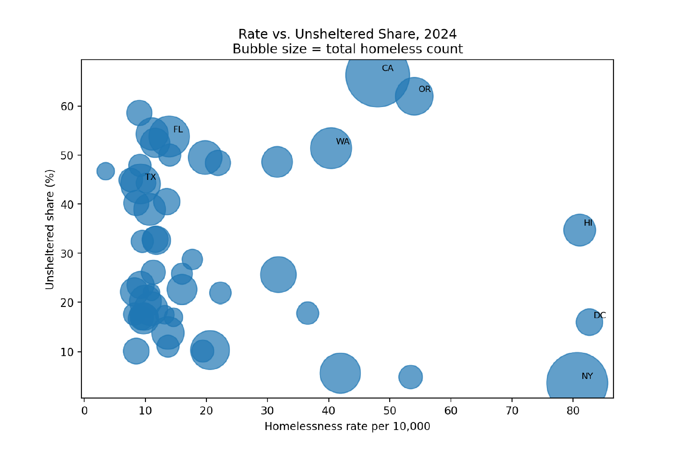

Food Access in Washington, D.C.
Theme: Food availability compared with meaningful access.
Methods: ArcGIS Pro, ArcGIS Online, GeoJSON, MapLibre GL JS.
Insight: Food presence does not equal accessibility.
Jump to Food Access sectionCase Studies
Spatial analysis projects focused on inequality, access, housing, public health, and public-interest decision-making.
These projects show how I move from raw data to cleaned datasets, spatial analysis, map design, interpretation, and limitations.
Theme: Food availability compared with meaningful access.
Methods: ArcGIS Pro, ArcGIS Online, GeoJSON, MapLibre GL JS.
Insight: Food presence does not equal accessibility.
Jump to Food Access sectionTheme: State-level homelessness by count, rate, growth, and shelter status.
Methods: rate calculation, temporal change, comparative cartography.
Insight: Homelessness varies not only by scale, but by intensity, change, and structure.
Jump to Homelessness sectionTheme: Spatial structure in county-level Black and White mortality differences.
Methods: rate ratios, dual-data filtering, suppression review, hot spot analysis.
Insight: Breast cancer mortality disparities are spatially clustered, not randomly distributed.
Jump to Breast Cancer Mortality sectionWashington, D.C. | Food access
Food availability is not the same as food accessibility.
This project compares general food locations with SNAP-supported access in Washington, D.C. to reveal gaps between food availability and meaningful food access for low-income communities.
The V1 analysis separates food presence from SNAP-supported access and frames Southeast D.C. access gaps through an equity lens. Final claims should be based on validated food retailer records, SNAP authorization status, and demographic context.
Prepare food location layers, classify SNAP-supported and non-SNAP locations, export GeoJSON, and use web mapping to communicate the difference between availability and practical access.
Current map data is placeholder data. The next step is to replace it with verified ArcGIS Pro exports and add measured distance, transit, or service-area analysis.
Standalone project page is retained for future expansion, but V1 prioritizes this single-page portfolio flow.
United States | Housing | 2020-2024
Homelessness varies by intensity, growth, and structure across states.
This project compares state-level homelessness using total count, population-adjusted rate, change from 2020 to 2024, and unsheltered percentage.

Use the slider to compare two perspectives. Total counts show where the largest number of people are experiencing homelessness, while rates show where homelessness is most intense relative to population.
Change in homelessness rate can be read in two ways. Absolute change shows how much the rate increased or decreased, while standard deviation change shows which states stand out as unusual compared with the national pattern.

Use the slider to compare two ways of reading change. Absolute change shows where homelessness rates increased or decreased the most, while standard deviation highlights which states stand out compared with the national pattern.
Homelessness is not only a question of scale. States with similar homelessness rates can differ sharply in how homelessness is experienced. The unsheltered share shows where people are more likely to be outside the shelter system, while the bubble chart compares rate, unsheltered share, and total count together.


The project distinguishes large total counts from high per-capita intensity and uses change and unsheltered share to describe different forms of state-level housing pressure.
Compile state totals, calculate rates, compare 2020 and 2024 values, and prepare static maps and charts for rate, count-versus-rate, change, and unsheltered percentage.
Point-in-time counts are sensitive to local methods, timing, and definitions. The next step is to add final map exports and source-specific interpretation.
Standalone project page is retained for future expansion, but V1 prioritizes this single-page portfolio flow.
United States counties | Public health
Racial disparities in breast cancer mortality are spatially structured, not random.
This project compares Black and White breast cancer mortality rates in counties where both values are available and evaluates whether disparities cluster spatially.
A mortality ratio greater than 1 means Black mortality is higher than White mortality in that county. Dual-data counties are required because suppressed low-count data means some counties cannot be compared directly.
Filter to comparable counties, calculate Black-to-White mortality ratios, map disparity patterns, and use hot spot analysis to evaluate spatial clustering.
Suppression and county-level aggregation limit interpretation. The next step is to add final outputs and document suppression rules, ratio calculation, and hot spot parameters.
Standalone project page is retained for future expansion, but V1 prioritizes this single-page portfolio flow.